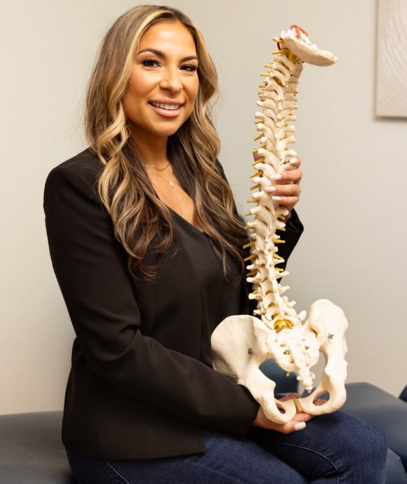
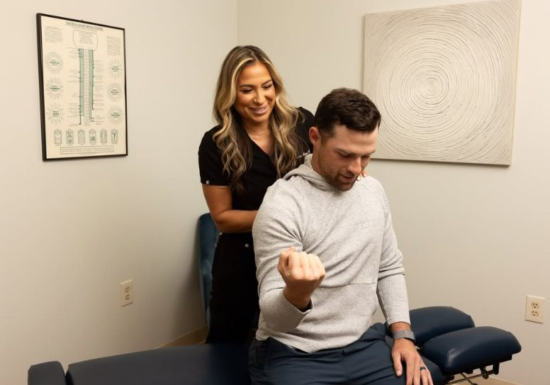
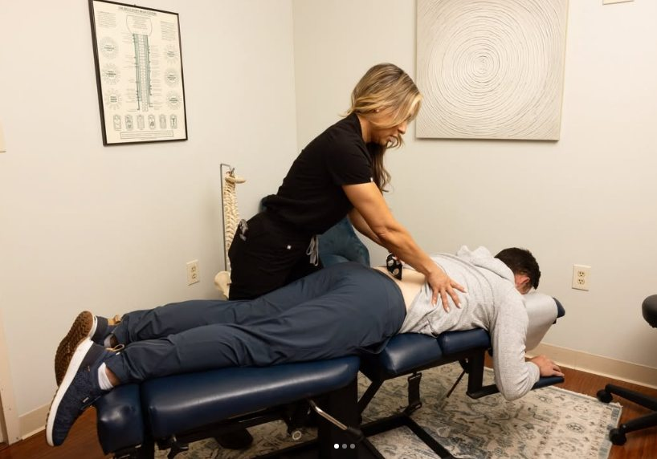

Movement First
Care considers posture, mobility, stability, daily demands, and the way your body moves.
Meet The Doctor
Dr. Nappi is a New Jersey licensed chiropractor and the owner of Proactive Health Chiropractic in Little Silver. Her care style is calm, movement-focused, and practical, with visits built around each patient's history, goals, and day-to-day life.

At Proactive Health Chiropractic, Dr. Nappi works with patients who want to move better, recover with more confidence, and understand what may be contributing to discomfort. Her approach may include spinal and joint assessment, soft-tissue care, movement screening, rehabilitation guidance, and whole-person wellness support.
Visits are designed to feel personal and focused. The goal is not just to address symptoms, but to help patients build better movement habits, improve function, and feel more comfortable in their routines.
Care considers posture, mobility, stability, daily demands, and the way your body moves.
Treatment may include chiropractic care, soft-tissue techniques, and patient-centered exercise.
Recommendations can include rehabilitation, nutrition, recovery, and practical wellness guidance.
These photos show the Little Silver treatment space and the patient-centered care style at Proactive Health Chiropractic.


Schedule online or contact the office if you have questions before choosing an appointment type.